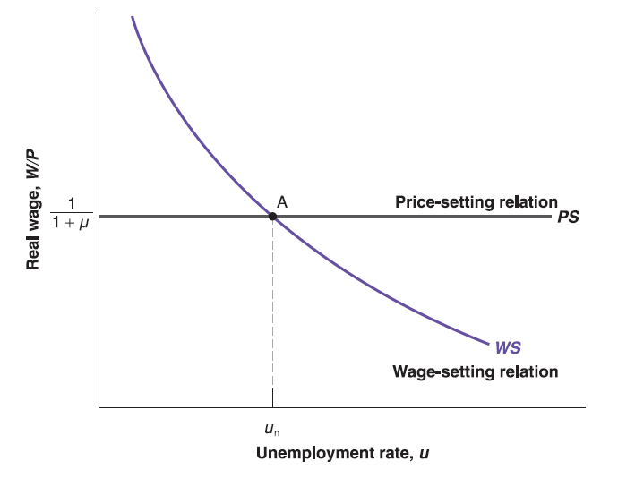

Mingze Huang
2021-07-27
We capture our discussion of wage determination by using the following equation: \(W=P\cdot F\underset{(-, +)}{(u, z)}\).
Alternative, we can rearrange the wage determination equation to see real wage: \(\frac{W}{P}=F\underset{(-, +)}{(u, z)}\).
The aggregate nominal wage \(W\) depends on three factors:
The price level \(P\).
The unemployment rate, \(u\).
A catchall variable, \(z\), that stands for all other variables that may affect the outcome of wage setting.
Unemployment benefit One more year?
The prices set by firms depend on the costs they face (Economic Profit). These costs depend on the nature of the production function: \[ Y=A\cdot N \] where \(Y\) is output, \(N\) is employment and \(A\) is labor productivity. In this simplied production function, we ignore capital (e.g. machines and factories) for a while. We also ignore technological progress and assume \(A\) is constant.
Assume \(A=1\), we have \(Y=N\). This is equivalent to assume one unit of labor produces one unit of goods.
Since labor cost per unit is wage \(W\), sales revenue per unit is price \(P\) (In microeconomics: marginal cost of production - the cost of producing one more unit of output - is equal to \(W\)).
Perfect competition on goods market: \(P=W\) (marginal revenue equals to marginal cost).
General case: \(P=(1+\mu)W\) (marginal revenue equals to marginal cost (\(\mu=0\), e.g. perfect competition) greater than marginal cost (\(\mu>0\), e.g. market power)).
Alternatively, we can rearrange price determination equation to see real price: \(\frac{P}{W}=1+\mu\).
Take catchall variable \(z\) and mark-up \(\mu\) as given (exogenous), this is a two-equation system with two unknown (endogenous) variables: real wage (\(\frac{W}{P}\)) (if we treat it as one variable here) and unemployment rate (\(u\)). Labor market equilibrium is determined by:
\[ \begin{cases} \frac{W}{P}=F(u, z) & \text{wage-setting relation} \\ \frac{W}{P}=\frac{1}{1+\mu} & \text{price-setting relation} \end{cases} \] The solution is obvious:
The equilibrium level of real wage is uniquely determined by mark-up (\(\mu\)) through price-setting relation (e.g. \(\frac{W}{P}\equiv\frac{1}{1+\mu}\)) since \(\mu\) is given.
Plug the equilibrium real wage (\(\frac{W}{P}\equiv\frac{1}{1+\mu}\)) into wage setting relation, we get \(F(u, z)=\frac{1}{1+\mu}\). There exist an unique solution \(u_{n}\) which satisfies the equation (e.g. \(F(u_{n}, z)\equiv\frac{1}{1+\mu}\)) since \(\mu\) is given.
In summary, assume catchall variable \(z\) is given, for any level of mark-up \(\mu\), there is always an equilibrium real wage level \(\frac{W}{P}\equiv\frac{1}{1+\mu}\) and equilibrium unemployment level \(u_{n}\) on the labor market.
Similarly, we can draw this equation system as two curves (WS curve and PS curve) on a 2-dimensional graph since there are two unknown variables (real wage \(\frac{W}{P}\) as vertical axis and unemployment rate \(u\) as horizontal axis).
Note that price-setting relation comes from firms’ decision, it implies that: given the level of mark-up (\(\mu\)) by market competition, the highest real wage \(\frac{W}{P}\) the firm is willing to pay is unrelated to unemployment rate \(u\), but uniquely determined by mark-up \(\mu\) as \(\frac{W}{P}\equiv\frac{1}{1+\mu}\). (Flat curve)
The wage-setting relation comes from workers’ decision, the higher the unemployment rate \(u\), the lower the real wage \(\frac{W}{P}\) they have to accept (e.g. outside choice).
